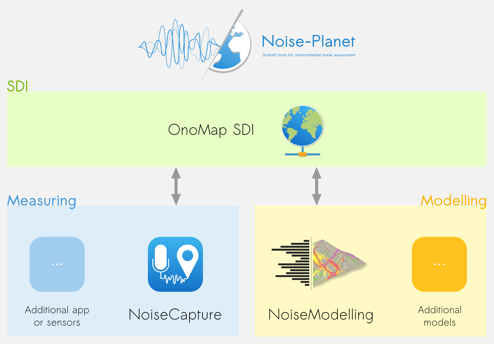

The Project
The Project
Noise-Planet
Scientific tools for environmental noise assessment
The Noise-Planet project aims to provide a global and generic framework dedicated to the collect, the modelisation and the assessment of environmental noise measures.
This project is divided in three main parts:
- the OnoMap Spatial Data Infrastructure (described here),
- the "Measuring" module,
- the "Modelling" module.
